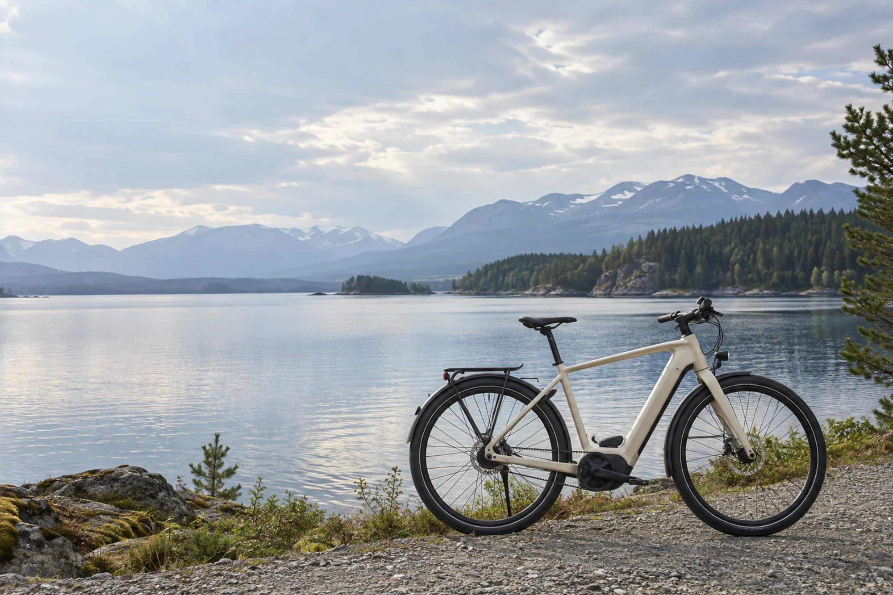

Near Horizon
Make far feel close.
Electric mobility for places beyond the usual route.
Explore the bikesExplore our bikes

Near Horizon Step
ExploreSome places
only feel far.
The lake outside the city. A friend across town. The trail at the end of the line.
They’re closer than you think. It’s the connections that make them feel far. Near Horizon opens up the space between where you are and where you’d like to be.
A little more freedom
Thought through.
Beautifully simple.


Rides. Places.
Possibilities.
Just somewhere you’d like to be.
A ride by the water. Coffee across town.
A little more room for the everyday.


BEYOND
THE LAST STOP.
Too far to walk.
Awkward by transit.
Closer by bike.
